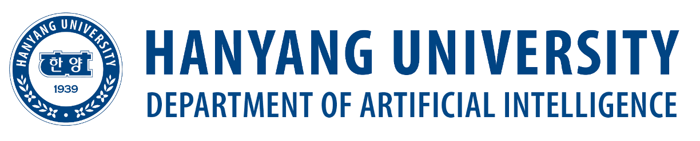

This is an international workshop on weakly supervised learning. The main goal of this workshop is to discuss challenging research topics in weakly supervised learning areas such as semi-supervised learning, positive-unlabeled learning, label noise learning, partial label learning, and self-supervised learning, as well as the foster collaborations among universities and institutes.
Program
Venue & Date
Workshop Venue: Rooms 508 & 911, ITBT Building, Hanyang University, 222 Wangsimni-ro, Seongdong-gu, Seoul 04763, South Korea.
Workshop Date: August 28 (Friday) -- August 29 (Saturday), 2026 (Korea Standard Time (UTC+9)).
Schedule
The workshop uses Korea Standard Time (UTC+9). Each oral session consists of three 30-minute talks. Talk titles will be announced soon.
| Time | Event |
|---|---|
| August 28 (Day 1) | |
| 09:30 -- 09:45 | Opening Remarks Hosts: Masashi Sugiyama (RIKEN / The University of Tokyo) and Bohyung Han (Seoul National University) |
| 09:45 -- 10:45 | Keynote 1 Title: Weak Supervision Meets LLMs: From Limited Demonstrations to Self-Teaching Speaker: Ivor W. Tsang (A*STAR Centre for Frontier AI Research, Singapore) Abstract & BioAbstract: Foundation models are transforming how machines learn from limited supervision, creating new opportunities to build intelligent systems with fewer human annotations. Yet their effectiveness depends on how well a small number of demonstrations and user preferences can be amplified, evaluated, and refined. This talk explores the convergence of weak supervision and large language models through self-teaching, connecting established ideas in semi-supervised learning, noisy-label learning, and knowledge distillation with emerging approaches to in-context learning and personalized alignment. Rather than treating model-generated predictions as inherently reliable, self-teaching enables models to learn from agreement, recognize uncertainty, and progressively refine imperfect outputs. These techniques can also help researchers generate, organize, and validate new datasets tailored to particular tasks, domains, languages, and communities, substantially reducing the cost of data development. Limited human guidance can further steer this process toward culturally relevant and personally meaningful outcomes. Looking ahead, this paradigm could shift AI development away from massive, static datasets and toward continuous collaboration among researchers, users, and models. By responsibly amplifying scarce supervision, self-teaching may enable more accessible, adaptive, trustworthy, and inclusive foundation models. Bio: Professor Ivor W. Tsang is Director of the A*STAR Centre for Frontier AI Research (CFAR), Adjunct Professor at Nanyang Technological University, Singapore, and Honorary Professor of Artificial Intelligence at the University of Technology Sydney. His research spans transfer learning, deep generative models, weakly supervised learning, and large-scale analytics for ultra-high-dimensional data. He is internationally recognized for foundational contributions to machine learning theory and its real-world applications. Professor Tsang has received numerous prestigious distinctions, including the ARC Future Fellowship, the International Consortium of Chinese Mathematicians Best Paper Award, the AI 2000 AAAI/IJCAI Most Influential Scholar in Australia Award, the NeurIPS 2018 Most Influential Paper Award, the CVPR 2010 Best Student Paper Award, the CPAL 2024 Best Paper Award, the IEEE TMM 2014 Prize Paper Award, and the IEEE TNN 2004 Outstanding Paper Award. In 2022, he was elected an IEEE Fellow in recognition of his contributions to large-scale machine learning and transfer learning. Since 2024, Professor Tsang has led Singapore’s national initiative on Trustworthy Foundation Models under the National Multimodal LLM Programme, helping shape the country’s strategic direction in artificial intelligence. He also oversees major national initiatives, including the AI Singapore Materials Design Grand Challenge and the Maritime AI Programme. |
| 10:45 -- 11:00 | Coffee Break |
| Session 1 | |
| 11:00 -- 11:30 | Title: Recent Advances in Data-Adaptive Hypothesis Testing Speaker: Feng Liu (The University of Melbourne) Abstract & BioAbstract: Hypothesis testing is a fundamental tool for assessing whether observed data provide statistically significant evidence of distributional differences. While classical two-sample testing asks whether two distributions are identical, many modern machine learning applications require a more nuanced question: are two distributions sufficiently close, and to what extent does their difference matter? In this talk, I will discuss recent advances in data-adaptive hypothesis testing through the lens of distribution closeness testing for complex data. Specifically, I will focus on a recent kernel-based approach that extends distribution closeness testing beyond discrete one-dimensional settings. The key idea is to use maximum mean discrepancy (MMD) to compare distributions in a reproducing kernel Hilbert space, while introducing norm-adaptive MMD (NAMMD) to better account for distributional norms and obtain a more informative notion of closeness. Building on its asymptotic behavior, the resulting test provides theoretical guarantees on type-I error and test power. I will also present experiments showing how closeness testing can be used in weakly supervised learning scenarios, including distribution shift detection and adversarial machine learning. The talk will highlight how data-adaptive testing can offer flexible and practically meaningful tools for assessing model reliability under changing and potentially corrupted data conditions. Bio: Feng is a Senior Lecturer (equivalent to an Associate Professor in the United States academic ranking) in Machine Learning and an ARC DECRA Fellow at the School of Computing and Information Systems, The University of Melbourne, where he directs the Trustworthy Machine Learning and Reasoning (TMLR) Lab. His research develops rigorous statistical foundations and practical methods for trustworthy machine learning, with representative publications in JMLR, TPAMI, TNNLS, NeurIPS, ICML, ICLR, Nature Plants, and Nature Communications. He is a communication chair of NeurIPS 2026 and has received the Outstanding Paper Award from NeurIPS 2022. |
| 11:30 -- 12:00 | Title: Action-Sufficient Goal Representation for Goal-Conditioned Reinforcement Learning Speaker: Taesup Moon (Seoul National University) Abstract & BioAbstract: In offline goal-conditioned reinforcement learning (GCRL), hierarchical approaches decompose long-horizon tasks into high-level subgoal prediction and low-level action execution. A critical design choice in such architectures is the goal representation—the compressed encoding of goals that serves as the interface between these levels. Existing methods derive this representation from value learning, implicitly assuming that information sufficient for value estimation is adequate for optimal action prediction. We show that this assumption can fail even under exact value estimation, as such representations may collapse goals requiring distinct optimal actions. To address this, we introduce action sufficiency, an information theoretic condition on goal representations necessary for optimal action prediction. We prove that value sufficiency, the preservation of sufficient information for value estimation, does not imply action sufficiency and empirically verify that the latter is more strongly associated with control success in a discrete environment. We further demonstrate that an actor-based representation, naturally induced by standard log-likelihood training of the low-level policy, is approximately action-sufficient. Empirically, our actor-based representations consistently outperform representations learned via value function estimation. Bio: Taesup Moon received the B.S. degree in electrical engineering from Seoul National University, Seoul, South Korea, in 2002, and the M.S. and Ph.D. degrees in electrical engineering from Stanford University, Stanford, CA, USA, in 2004 and 2008, respectively. He is currently a Professor with the Department of Electrical and Computer Engineering, Seoul National University (SNU). Prior to joining SNU in 2021, he was an Assistant/Associate Professor with the Department of Electrical and Computer Engineering, Sungkyunkwan University (2017-2021), an Assistant Professor with the Department of Information and Communication Engineering, DGIST (2015-2017), a Research Staff Member with the Samsung Advanced Institute of Technology (2013-2015), a Postdoctoral Researcher with the Department of Statistics, UC Berkeley (2012-2013), and a Scientist with Yahoo! Labs (2008-2012). His current research interests include adaptive and trustworthy machine learning, safe AI, information theory and Brain+AI. |
| 12:00 -- 12:30 | Title: Trustworthy ML Systems for Deep Agentic Reasoning and Evaluating Open Agents Speaker: Bo Han (Hong Kong Baptist University) Abstract & BioAbstract: Foundation models increasingly reason before answering, yet post-training alone struggles with complex, long horizon problems that demand reliable tool use and trustworthy test time refinement. This suggests the bottleneck is not only capability acquisition but system level support for reasoning. In this talk, I will present two systems that move from reasoning models to reasoning systems. First, AlphaApollo orchestrates foundation models and professional tools into a self-evolving system for deep agentic reasoning, unifying multi-turn agentic reasoning with structured tool calls, turn level reinforcement learning for stable tool use optimization, and a propose, judge, and update evolution loop with tool assisted verification and long horizon memory. Second, AlphaDiana tackles how to evaluate open agents, which are no longer just models but systems that combine a model with a harness. It offers a unified, harness aware platform that standardizes models, harnesses, benchmarks, environments, scorers, and budgets, and uses trajectory level analysis to explain why an agent succeeds. Together, these systems take a step towards trustworthy reasoning with foundation models. The talk will also cover empirical findings from both systems and open directions for building the next generation of reasoning agents. Bio: Bo Han is currently an Associate Professor and RGC Research Fellow in Machine Learning at Hong Kong Baptist University and a BAIHO Visiting Scientist at RIKEN AIP. He has served as Senior Area Chair of NeurIPS and ICML, and Area Chair of ICLR, UAI and AISTATS. He has also served as Associate Editor of IEEE TPAMI, MLJ and JAIR, and Editorial Board Member of JMLR and MLJ. He received paper awards, including Outstanding Paper Award at NeurIPS and Most Influential Paper at NeurIPS. He received the RGC Research Fellow Award, RGC Early CAREER Scheme, IEEE AI’s 10 to Watch Award, IJCAI Early Career Spotlight, INNS Aharon Katzir Young Investigator Award, IEEE Computing’s Top 30 Early Career Professional Award, RIKEN BAIHO Award, Dean’s Award for Outstanding Achievement, and Microsoft Research StarTrack Scholars Program. He is an ACM Distinguished Speaker and IEEE Senior Member. See his full bio at: https://bhanml.github.io/. |
| 12:30 -- 14:00 | Lunch Break |
| 14:00 -- 15:30 | Poster Session 1 |
| 15:30 -- 16:00 | Coffee Break |
| Session 3 | |
| 16:00 -- 16:30 | Title: Recent Advances on Importance Weighting for Classification under Distribution Shift Speaker: Gang Niu (RIKEN) Abstract & BioAbstract: Distribution shift, where the training and test distributions differ, remains a central challenge in modern classification. Importance weighting offers a principled way to correct such shifts by reweighting training losses using test-to-training density ratios. However, when combined with deep learning, classical importance weighting faces substantial difficulties, including the circular dependency between representation learning, density-ratio estimation, and weighted classification, as well as restrictive assumptions on distributional support. In this talk, I will present a line of work that modernizes importance weighting for classification under distribution shift. I will begin with dynamic importance weighting, a NeurIPS 2020 spotlight paper that serves as the foundation of this line of research. DIW addresses the incompatibility between fixed density-ratio estimation and learned deep representations by jointly and iteratively updating the classifier and the importance weights. I will then briefly discuss generalized importance weighting, a NeurIPS 2023 spotlight paper that extends DIW to distribution-shift scenarios where the test support is wider than or only partially overlaps with the training support. The final part of this talk will focus on accelerated dynamic importance weighting, our latest preprint. ADIW revisits DIW from both computational and methodological perspectives. On the computational side, it significantly reduces the cost of repeatedly estimating importance weights during deep training: rather than solving the weight-estimation subproblem to convergence in every mini-batch, ADIW performs only a few warm-started projected gradient updates, turning DIW into an efficient, fully GPU-based end-to-end approach, more suitable for modern large-scale classification tasks. On the methodological side, it provides a unified divergence-minimization framework that accommodates multiple weight estimators, allowing DIW-style methods to be instantiated with different statistical divergence measures. Together, DIW, GIW, and ADIW show how importance weighting can evolve from a classical risk-correction tool into a scalable and flexible framework for robust classification under increasingly realistic distribution-shift settings. Bio: Gang Niu is currently an indefinite-term senior research scientist at RIKEN Center for Advanced Intelligence Project. He received the PhD degree in computer science from Tokyo Institute of Technology in 2013. He joined RIKEN as a research scientist in 2018, and he was tenured in 2020 and promoted to senior research scientist in 2023. He co-authored the book “Machine Learning from Weak Supervision: An Empirical Risk Minimization Approach” (the MIT Press). |
| 16:30 -- 17:00 | Title: Medical AI in Weakly and Partially Labeled Environments Speaker: Sang Hyun Park (POSTECH) AbstractAbstract: The remarkable success of deep learning in medical image analysis has been driven by the availability of large-scale, accurately annotated datasets. In clinical practice, however, obtaining comprehensive annotations is often prohibitively expensive, time-consuming, and dependent on expert knowledge. As a result, many real-world medical AI applications are developed under weakly or partially labeled environments, where only coarse-grained annotations are available, labels are incomplete, or label spaces vary across institutions. In this talk, I will present our recent efforts to develop robust learning frameworks for medical AI under these imperfect supervision settings. I will first introduce weakly supervised learning methods for computational pathology, where whole-slide images containing billions of pixels are typically annotated only at the slide level. I will discuss how multiple instance learning (MIL) enables accurate slide-level prediction while simultaneously identifying diagnostically relevant regions without requiring dense pixel-level annotations. I will then extend the discussion to federated learning with partially labeled data, where participating institutions often possess heterogeneous label spaces or incomplete annotations. I will present recent approaches that enable collaborative model training despite missing labels and inconsistent supervision across clients, highlighting practical strategies for improving robustness and generalization in real-world federated medical AI. |
| 17:00 -- 17:30 | Title: Automated Model Evaluation for Object Detection Speaker: Kibok Lee (Yonsei University) Abstract & BioAbstract: Assessing model performance in new environments remains a significant challenge, as annotating test data is often expensive and time-consuming. Automated model evaluation (AutoEval) addresses this challenge by estimating model performance on unlabeled test datasets, enabling efficient evaluation without human annotations. In this talk, I will briefly introduce AutoEval and present our recent research on AutoEval for object detection. Bio: Kibok Lee is currently an Associate Professor in the Department of Applied Statistics / Statistics and Data Science / Artificial Intelligence (AI+X) at Yonsei University. Previously he worked as an Applied Scientist at Amazon Web Services, Rekognition Team (AWS AI). He received his Ph.D. from the Department of Computer Science and Engineering at the University of Michigan in 2020, advised by Prof. Honglak Lee. His research focuses on robust deep learning under distribution shifts to enable reliable and successful deployment of foundation models in real-world applications. |
| August 29 (Day 2) | |
| 09:30 -- 10:30 | Keynote 2 Title: Object-centric Approaches to Multimodal Learning Speaker: Suha Kwak (POSTECH) Abstract & BioAbstract: The advancement of multimodal AI has been driven largely by the strategy of acquiring large-scale paired data of different modalities from the web and training models using their semantic equivalence (match or mismatch) as labels. However, this strategy poses several limitations due to a lack of precise labeling. First, the relationships between data are not a simple binary of match or mismatch, but rather multi-faceted since data are polysemous in general. For example, an image often contains various types of objects that interact in different ways, and text, on the other hand, is highly abstract and can be realized into countless variations of images. To learn multimodal representations from such multi-faceted relations, part-to-part correspondences between data need to be annotated, but the cost is far too prohibitive to be practical at scale. Furthermore, to perform tasks beyond simple representation learning, such as visual grounding, supervision via detection boxes or segmentation masks must be provided. As with other weakly supervised learning tasks, providing such dense prediction labels on a large scale is impractical. Moreover, since there is no predefined class set and objects must be precisely annotated to correspond with natural language descriptions, the expected labeling cost is even higher than that of standard detection and segmentation. This talk presents object-centric learning (OCL) as a solution to these issues. I will first introduce the concept of OCL, which autonomously identifies semantic units within data and represents the data as a combination of these units. Then by extending this approach to multimodal learning, I will demonstrate that it is possible to express the multi-faceted relationships between data of different modalities, train models to perform visual grounding tasks without the need for segmentation or detection labels, and ultimately secure interpretability in the results. Bio: Suha Kwak is an associate Professor in the Graduate School of Artificial Intelligence at POSTECH, Korea. He received his PhD from POSTECH under the supervision of Prof. Joon Hee Han and Prof. Bohyung Han, and was a Postdoctoral Fellow at École Normale Supérieure / Inria – Paris, France, working with Prof. Ivan Laptev and Prof. Jean Ponce. He is a recipient of Kakao Faculty Fellowship, POSTECH CSE Young Scholar Award, and the KCCV Sang-Uk Lee Prize. Also, one of his papers was nominated as a Best Paper Finalist in CVPR 2022, and he was nominated as one of 12 Outstanding Area Chairs in ECCV 2024. He served as an Associate Editor of IJCV, and he has been serving as a lead Area Chair or an Area Chair for CVPR, ICCV, ECCV, NeurIPS, ICLR, ICML, and AAAI. |
| 10:30 -- 11:00 | Coffee Break |
| Session 4 | |
| 11:00 -- 11:30 | Title: Towards Understanding Distribution Shift in Reinforcement Learning from Verifiable Rewards Speaker: Zhen-Yu Zhang (RIKEN AIP) Abstract & BioAbstract: Reinforcement learning from verifiable rewards (RLVR) has become an important approach for improving reasoning models. However, the data used for reinforcement learning may differ substantially from the downstream evaluation distribution, limiting both training efficiency and generalization. This talk will introduce a target-aware approach to efficient RLVR under distribution shift, using limited downstream feedback to improve rollout allocation and generalization. I will also discuss broader implications for building efficient and generalizable RLVR systems under practical data-access constraints. Bio: Zhen-Yu Zhang is currently a Postdoctoral Researcher in the Imperfect Information Learning Team at the RIKEN Center for Advanced Intelligence Project (RIKEN AIP). He currently serves as an Area Chair for NeurIPS and ICML. His research focuses on machine learning, particularly learning under distribution shifts and weak supervisions. |
| 11:30 -- 12:00 | Title: Efficient Test-Time Scaling through Structured Exploration and Compositional Verification Speaker: Jungseul Ok (POSTECH) Abstract & BioAbstract: Recent advances in foundation models have demonstrated the effectiveness of test-time scaling, raising the question of how additional computation should be allocated during inference. In this talk, I will introduce our recent work on two complementary directions: efficient exploration for language-model reasoning and compositional verification for vision tasks. The talk will cover semantic exploration for reasoning, structured verification for visual understanding, and verification-guided approaches for controllable image generation and editing. I will also discuss how compositional verification through visual or AI programming may provide a useful interface for future AI agents and robotics, where reasoning and actions need to be grounded in verifiable interactions with the physical world. Bio: Jungseul Ok is an Associate Professor in the Department of Computer Science and Engineering and the Graduate School of Artificial Intelligence at POSTECH, where he leads the Machine Learning Lab and Zero-trust AI Research Center. He received his Ph.D. from KAIST and was a postdoctoral researcher at KTH Royal Institute of Technology and the University of Washington. His research interests lie in machine learning for intelligent decision-making. His recent research focuses on efficient test-time scaling through structured exploration and verification, with applications to language reasoning, visual understanding, controllable generation, and future embodied AI systems. |
| 12:00 -- 12:30 | Title: Privacy-Preserving Adaptation against Membership Inference Attacks for Latent Diffusion Models Speaker: Jingfeng Zhang (Fudan University) Abstract & BioAbstract: Foundation models have become the dominant paradigm in modern AI, enabling rapid adaptation to diverse downstream tasks through parameter-efficient fine-tuning techniques such as Low-Rank Adaptation (LoRA). While LoRA allows personalized generative models to be trained and shared efficiently, it also raises important privacy concerns, as adapted models may inadvertently leak sensitive information from the underlying training data through privacy attacks. In this talk, I will first provide a brief overview of foundation model adaptation and discuss the emerging privacy challenges in personalized generative AI. I will then present our recent work on Stable Membership Privacy-Preserving LoRA (SMP-LoRA), a framework that enhances the privacy of adapting the latent diffusion models while preserving generation quality. SMP-LoRA formulates privacy-preserving adaptation as a stable optimization problem, supported by theoretical analysis and extensive empirical evaluation. Experimental results demonstrate that the proposed method substantially reduces membership inference attacks while maintaining high image fidelity, offering a practical approach toward secure and trustworthy adaptation of foundation models. Bio: Prof. Jingfeng Zhang is an Associate Professor at the Institute of Trustworthy Embodied Intelligence, Fudan University. He received his Ph.D. from the National University of Singapore. Before joining Fudan University in 2026, he was a Postdoctoral Research Scientist at the RIKEN Center for Advanced Intelligence Project (AIP), Japan, and a tenured Lecturer and Ph.D. Supervisor at the University of Auckland, New Zealand. His research focuses on trustworthy machine learning and embodied intelligence, with an emphasis on adversarial machine learning, and safe embodied AI systems. He has published more than 30 papers in leading AI venues, including ICML, NeurIPS, ICLR, and IEEE Transactions on Pattern Analysis and Machine Intelligence (TPAMI). His work has been recognized with distinctions such as ICLR Oral and NeurIPS Spotlight presentations. He also serves as an Area Chair for leading AI conferences, including ICML, NeurIPS, and ICLR. |
| 12:30 -- 14:00 | Lunch Break |
| 14:00 -- 15:30 | Poster Session 2 |
| 15:30 -- 16:00 | Coffee Break |
| Session 6 | |
| 16:00 -- 16:30 | Title: Towards Reliable Self-Supervised Learning Speaker: Shuo Chen (Nanjing University) Abstract & BioAbstract: The rapid advancement of self-supervised learning, particularly contrastive learning, has enabled remarkable progress in visual representation learning without relying on manual annotations. However, existing contrastive learning frameworks face critical challenges such as overfitting in high-dimensional spaces, false negative pairs, and the difficulty of capturing consistent relational structures across data. These issues limit the robustness and generalization capability of contrastive models, especially when applied to complex real-world tasks. To address these challenges, this talk presents a series of methodological innovations aimed at improving the reliability of contrastive learning. Specifically, we will introduce low-dimensional contrastive learning to mitigate the curse of dimensionality, a large-margin contrastive learning approach with distance polarization regularization to enhance discrimination, and a high-order difference regularization technique based on cross total variation to capture consistent relational patterns. Building on these advances, we will further demonstrate their practical impact across multiple application domains, including zero-shot recognition, multi-view learning, and few-shot learning with long-tailed labels. Together, these contributions pave the way toward more robust, generalizable, and application-ready self-supervised learning systems. Bio: Shuo Chen is currently an Associate Professor in the School of Intelligence Science and Technology at Nanjing University. Before that, he was a Postdoctoral Researcher and Research Scientist at RIKEN Center for Advanced Intelligence Project (RIKEN-AIP) Japan from 2020 to 2024. His research interests mainly include machine learning and pattern recognition, in particular, self-supervised learning and metric learning. He has served as the Area Chair (AC) or Senior Area Chair (SAC) of NeurIPS, ICML, ICLR, and CVPR over 20 times, and also served as the Action Editor (AE) for several journals such as Neural Network. He won the Excellent Achievement Award of RIKEN, the Excellent Doctoral Dissertation Award of Chinese Institute of Electronics (CIE), and the Excellent Doctoral Dissertation Nomination of Chinese Association for Artificial Intelligence (CAAI). |
| 16:30 -- 17:00 | Title: Logistic Bandit with Missing Contextual Variables Speaker: Jisu Kim (UNIST) AbstractAbstract: Contextual bandit algorithms are often deployed in real-world environments where contextual variables may be partially observed or missing due to factors such as sensing noise, privacy or cost restrictions, or incomplete responses from users. Surprisingly, not many works in the bandit literature have considered this problem despite its practical relevance. This paper introduces a novel logistic contextual bandit algorithm designed for environments with binary reward and partially missing contextual variables. We consider a challenging and realistic setting where both the missing variables and the missing mechanism are correlated with the observed ones. We incorporate a new imputation framework into the GLOC algorithm of Jun et al. (2017), and prove that the proposed algorithm achieves a high-probability regret bound O(√T) where T denotes the time horizon with respect to a well-defined oracle. The validity of our theoretical analysis is further corroborated through experiments on synthetic datasets, demonstrating robust performance under missingness. |
| 17:00 -- 17:30 | Title: Evaluating Weakly-Supervised Learning Right Speaker: Junsuk Choe (Sogang University) Abstract & BioAbstract: Evaluating a weakly-supervised method requires that the evaluation itself not use information the method is not supposed to have. I discuss this issue in depth through my own work on weakly-supervised object localization (WSOL), then briefly describe two recent cases. In WSOL, methods are trained using only image-level labels, without location annotations. I show that the WSOL methods dominant at the time relied on full box-level supervision at validation time to tune hyperparameters, which is not allowed under the weakly-supervised setting. Under a corrected protocol that limits full supervision to a small held-out set, five of the most-cited WSOL methods show no improvement over CAM, and all underperform a simple few-shot baseline that uses the same amount of supervision differently. The same issue appears elsewhere. Weak-to-strong generalization work notes that using ground-truth labels for early stopping is not a valid method, for the same reason. In machine unlearning, the issue is more fundamental: an unlearned model is expected to match a model retrained from scratch, but if that retrained model were available, unlearning would not be necessary in the first place. In each case, a method that does not actually work can appear to work if the evaluation is not designed carefully. Bio: Junsuk Choe is an Associate Professor in the Department of Computer Science and Engineering at Sogang University, Seoul. He received his B.S. and Ph.D. from Yonsei University in 2013 and 2020, respectively, the latter advised by Prof. Hyunjung Shim, and worked as a Research Intern and then Research Scientist at NAVER AI Lab before joining Sogang in 2021. He worked on evaluation protocols for weakly-supervised object localization (CVPR 2020, TPAMI 2022). He serves as an Area Chair for COLM 2025–26, ICLR 2026, and NeurIPS 2026. |
| 17:30 -- 17:40 | Closing Remarks |
Registration
Registration is now open. Please sign up via the following Google Form: https://forms.gle/MaZa2ZtYoZe8CuBf6.
Registration deadline: August 23 (Sunday), 2026 (Korea Standard Time (UTC+9)).
Poster Submission
Poster submissions are now open. Please submit your poster via the following Google Form: https://forms.gle/JB2NB5JNB44edKx39.
Poster submission deadline: August 23 (Sunday), 2026 (Korea Standard Time (UTC+9)).
Topics
Overview
Machine learning should not be accessible only to those who can pay. Specifically, modern machine learning is migrating to the era of complex models (e.g., deep neural networks), which require a plethora of well-annotated data. Giant companies have enough money to collect well-annotated data. However, for startups or non-profit organizations, such data is barely acquirable due to the cost of labeling data or the intrinsic scarcity in the given domain. These practical issues motivate us to research and pay attention to weakly supervised learning (WSL), since WSL does not require such a huge amount of annotated data. We define WSL as the collection of machine learning problem settings and algorithms that share the same goals as supervised learning but can only access to less supervised information than supervised learning. In this workshop, we discuss both theoretical and applied aspects of WSL.
This workshop is a series of our previous workshops at ACML 2019, SDM 2020, ACML 2020, IJCAI 2021, and ACML 2021. Our particular technical emphasis at this workshop is incomplete supervision, inexact supervision, inaccurate supervision, cross-domain supervision, imperfect demonstration, and weak adversarial supervision. Meanwhile, this workshop will also focus on WSL for Science and Social Good, such as WSL for healthcare, WSL for climate change, WSL for remote sensing, and new public WSL datasets regarding the scientific scenarios. With the emergence of foundation models, WSL has gained new momentum: foundation models can enhance WSL through their rich semantic knowledge and powerful representations, while WSL provides efficient solutions for adapting and aligning foundation models with minimal human supervision.
Topics of Interest
WSL workshop includes (but not limited to) the following topics:
- Algorithms and theories of incomplete supervision, e.g., semi-supervised learning, active learning, and positive-unlabeled learning;
- Algorithms and theories of inexact supervision, e.g., multi-instance learning, complementary learning, and open-set learning;
- Algorithms and theories of inaccurate supervision, e.g., crowdsourced learning and label-noise learning;
- Algorithms and theories of cross-domain supervision, e.g., zero-/one-/few-shot learning, transferable learning, and multi-task learning;
- Algorithms and theories of imperfect demonstration, e.g., inverse reinforcement learning and imitation learning with non-expert demonstrations;
- Algorithms and theories of adversarial weakly-supervised learning, e.g., adversarial semi-supervised learning and adversarial label-noisy learning;
- Algorithms and theories of self-supervision, e.g., contrastive learning and autoencoder learning;
- Algorithms and theories of WSL in foundation models, e.g., weak-to-strong paradigm, weak supervision signals for model alignment, and fine-tuning with weak feedback;
- Foundation models for WSL, e.g., leveraging large language/vision models to provide weak supervision signals, and foundation model guided label denoising and sample selection;
- Broad applications of weakly supervised learning in the field of computer science, such as weakly supervised object detection (computer vision), weakly supervised sequence modeling (natural language processing), weakly supervised cross-media retrieval (information retrieval), and weakly supervised cooperation policy learning (multi-agent systems).
- WSL for science and social good, such as WSL for COVID-19, WSL for healthcare, WSL for climate change, and WSL for remote sensing, meanwhile, new public datasets regarding the above WSL research directions (new focus).
Further Descriptions
The focus of this workshop is six types of weak supervision: incomplete supervision, inexact supervision, inaccurate supervision, cross-domain supervision, imperfect demonstration, and weak adversarial supervision, which are briefly introduced below.
- Incomplete supervision considers a subset of training data given with ground-truth labels while the other data remain unlabeled, such as semi-supervised learning and positive-unlabeled learning.
- Inexact supervision considers the situation where some supervision information is given but not as exacted as desired, i.e., only coarse-grained labels are available. For example, if we are considering to classify every pixel of an image, rather than the image itself, then ImageNet becomes a benchmark with inexact supervision. Besides, multi-instance learning belongs to inexact supervision, where we do not exactly know which instance in the bag corresponds to the given ground-truth label.
- Inaccurate supervision considers the situation where the supervision information is not always the ground-truth, such as label-noise learning.
- Cross-domain supervision considers the situation where the supervision information is scarce or even non-existent in the current domain but can be possibly derived from other domains. Examples of cross-domain supervision appear in zero-/one-/few-shot learning, where external knowledge from other domains is usually used to overcome the problem of too few or even no supervision in the original domain.
- Imperfect demonstration considers the situation for inverse reinforcement learning and imitation learning, where the agent learns with imperfect or non-expert demonstrations. For example, AlphaGo learns a policy from a sequence of states and actions (expert demonstration). Even if an expert player wins a game, it is not guaranteed that every action in the sequence is optimal.
- Weak adversarial supervision considers the situation where weak supervision meets adversarial robustness. Since machine learning models are increasingly deployed in real-world applications, their security attracts more and more attention from both academia and industry. Therefore, many robust learning algorithms aim to prevent various evasion attacks, e.g., adversarial attacks, privacy attacks, model stealing attacks, and so on. However, almost all those robust algorithms (against evasion attacks) implicitly assume the strong supervision signals (no noisy labels in the training data), which hardly meets the requirements in practice. Therefore, when we develop evasion-robust algorithms, it is very practical/urgent to consider the supervision signals are imperfect.
- Self-supervision considers the unsupervised situation, and it pre-trains a generic feature representation by autonomously building the pseudo supervision (e.g., the similarity contrast and sample reconstruction) from the raw data, the learned representation can be applied in various downstream tasks such as classification, retrieval, and clustering.
- WSL in foundation models considers the critical challenge of efficiently adapting and aligning foundation models to specific tasks and requirements. While foundation models acquire broad knowledge through pre-training on massive unlabeled data, they still face challenges in task-specific alignment, safety constraints, and behavioral refinement. WSL offers theoretical frameworks and practical approaches to achieve these objectives with minimal human supervision, enabling weak-to-strong generalization and efficient fine-tuning through various forms of weak supervision signals (e.g., preferences, rankings, constraints). This paradigm is particularly crucial for developing more trustworthy AI systems.
- Foundation models for WSL leverages the rich semantic knowledge and powerful representations learned by foundation models to enhance WSL tasks. The broad knowledge captured by foundation models enables multiple key capabilities: generating diverse forms of weak supervision signals, providing semantic understanding for label reasoning, augmenting training data through knowledge transfer, and improving WSL algorithms through better feature representations and cross-modal correlations.
Meanwhile, this workshop will continue discussing broad applications of weakly supervised learning in the field of computer science, such as weakly supervised object detection (computer vision), weakly supervised sequence modeling (natural language processing), weakly supervised cross-media retrieval (information retrieval), and weakly supervised cooperation policy learning (multi-agent systems).
Organizers
General Chairs
Bohyung Han, Seoul National University.
Kee-Eung Kim, KAIST.
Yung-Kyun Noh, Hanyang University.
Masashi Sugiyama, RIKEN / The University of Tokyo.
Program Chairs
Seunghoon Hong, KAIST.
Eun-Sol Kim, Hanyang University.
Previous Workshops
WSL 2025 Workshop, Nanjing, China.
WSL 2024 Workshop, Brisbane, Australia.
WSL 2023 Workshop, Tokyo, Japan.
ACML2022 WSL Workshop, Online.
ACML2021 WSL Workshop, Online.
IJCAI2021 WSRL Workshop, Online.
ACML2020 WSRL Workshop, Online.
SDM2020 WSUL Workshop, Ohio, United States.
ACML2019 WSL Workshop, Nagoya, Japan.
